さて、昨日は更新を1日お休みして、ROBODEX2002まで出かけて来ました。横浜ですよ。おしゃれ！同期に誘われなかったら絶対に行ってないね。
桜木町駅を降りると「ROBODEX2002入場待ち2時間」とか無茶なことを書いてあるので、昼飯がてら本屋で待ち時間潰しのための雑誌を物色。結局「アルカディア」買うあたりがダメなのではあるまいか。だって斑鳩最終面攻略だし…(ダメです)。そして何故かバーでランチのカツカレーを食う。同期に誘われなかったら絶対に食ってないね。
結局、会場へは2時間も待たずに40分くらいで入れました。しかし会場は狭すぎですよ。メガと言うにはあまりにも小さすぎる気がしますが、とにかくメガステージと呼ばれるステージでロボが行進していきます。人込みがすごいので人の頭の隙間から背伸びをして鑑賞。SONYのSDR-4Xはお姉さんに抱えられての行進で控えめに行って甘え過ぎです。
総合警備保障の筒型警備ロボ(車輪走行)の上半身が余りにもイングラム(機動警察パトレイバーの主役メカ)すぎるのはいかがなものか。肩にパトライトとか付いてます。ここまでやるなら篠原重工と名を変えて開発して欲しいです(マニアの主張ぽく)。
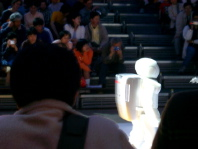
そのままメガステージの列に並び、ステージデモを見ることにしました。最初は筒型警備ロボが車輪でゆーっくりと進行、前にコンパニオンのお姉さんが立ちはだかると、かなり近くまで来てようやく立ち止まり「どいてください」と音声で案内。せめて避けてよ！あまりの進行速度の遅さに会場のよい子も退屈し始めてます。僕も途中からアルカディア読んでたけどね！(最低)
間にSONY SDR-4Xも登場しましたが、歩かずにその場で踊っているだけだったりして退屈もMAXに達したその時、思わぬ伏兵が登場！！日本文理大学の「メカロボ」だ！
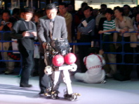
来るべき介護時代を見据えて研究開発された二足歩行ロボットだそうだよ！特徴は「学生の手作り」「コンピュータ制御せずにメカだけで駆動！」「二足歩行で世界最速時速4km/h！」の3点だそうですが、コンピュータ制御せずに介護とか無理なのでは、というより、そんなジョックスロボに介護されたくありません！転倒した時の保護用にサッカーボールやバスケットボールを半分に切って貼付けてある無茶な外見もジョックス度+1です。
立ち上がれメカロボ！後ろから支えが伸びてドンガッシャンと仰向けから前にのめり込むように立ち上るぞ！
歩けメカロボ！ジャイロを回転させてエネルギーを貯えたらゼンマイ仕掛けのように前進だ。膝を曲げるなんて器用なことはしないぞ！
とまぁやることなすこと大味なメカロボなんですけど、ボールで保護してるのからも分かるようによく倒れるので後ろで教授がスタンバイ！いつ倒れてもいいように後ろから心配そうについて行きます。介護ロボと言っても、どう考えても人間に介護されてるのですが、この際無視します。司会の人も「会場の人たちも思わず笑みがこぼれます」とか毒解説を始めて追い討ちをかけてます。やるなぁ。
そんなわけでメカロボの動きをみんなにも見て欲しくてデジカメでムービーにしました。ありのままを伝えるために何にも編集してませんよ。
予想外の伏兵で眠気もふっとんだ僕達は、ステージを離れてブースを見て歩きます。東京理科大学のSAYAは表情の研究用に開発され、今回マネキンで身体がついたというので楽しみにして行ってみたんですが、残念ながら調整中で生首が外されてました。ト、トマック！？あと理科大ブースには「マッスルスーツ」なるマッスルなスーツが展示されていたりしてよかったです。
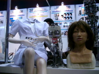 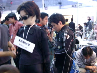
最後はやっぱりSONY SDR-4Xをしっかり見て来ました。といってもソニーブースの人込みにまみれて、人の頭の隙間から覗き見ていたんですけどね。なんだかんだ言ってデモうますぎです。しかしなんでシルクハットでタキシードの怪し気なおっちゃんが子供にチョコ配りながら司会をしているんですか。わけわからんですよ。
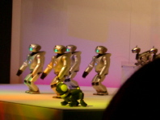
予想してたより出展数も少なかったんですが、ロボット業界はまだまだこれから盛り上がるんだよなぁ、という無難な感想でしめておきます。
帰りに横浜そごうで2,000円の天ぷらを食う。今日の食事は油っこいなぁ！同期に誘われてなかったら絶対に食ってないね。欲しがりませんカツまでは！(カツみたいな脂っこいものなんて欲しくありませんよ、という意)
折り畳みたくなる号のパーツの一部が壊れてしまい、組み立てた状態で固定することができなくなってしまったので、ここのところ会社には歩いて行っています。体重かけている分には勝手に折り畳まったりはしないんですけど、なんとなく気分的に。歩いてみると朝寝起きで自転車漕ぐよりも歩く方が楽な気がします。
通勤路ではいつも二人のスーツ姿の男が立っているんですけど、普段は無視していたんですよ。でも、よく見てみたら二人の背後に人型等身大の立て看板があるのに気付きました。スーツ姿の男が書かれています。もしかして、と思ってシングルショットを2〜3発ほど叩き込んでみたら壊れるじゃないですか。「ここでチェーン+1できたんだ！」と気付いたところで目が覚めました。さすがに斑鳩に毒されすぎだと思ってちょっとへこみました。スーツ姿なので黒*3ってことかなぁ。
くるり「水中モーター」。生産中止になったマブチ水中モーターへのレクイエムと解釈。水中モーターには湿っぽさよりもこういう夏の煌めきがよく似合う。
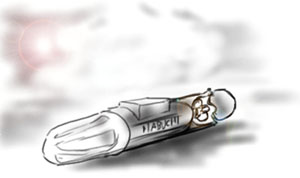
デジモン02にはジョグレス進化という、2体のデジモンが合体してパワーアップするというフィーチャーが出てくるのですが、今日、僕は同僚の質問も聞きとばし(ひどい)、会社を早めに抜け出して、バスに飛び乗り電車を乗り継いで大宮まで逃げ出しました。言うなればジョブレス退社です(最悪の挨拶)。
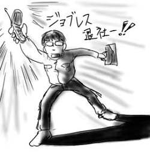
大宮WAVEでmidnight funk associationの「coffee shop rules」という超が32個くらい付く地味〜なアルバムと、くるりの「The world is mine」を購入。くるりは「TEAMROCK」が2001年俺内金返せアルバム部門で堂々の一位を獲得しているので、かなり様子見状態だったんですが、試聴してみると割と大丈夫だったので購入に踏み切りました。
それで当然のようにいつものゲーセンで「斑鳩」。最近スランプ気味にも関わらず、2面以降でパターン見直しなんかをやっているので残機が削られまくり。2面タイトル前、交喙(イスカ)ぐるぐる地帯は真ん中で弾を撃たずにしのいで、狙えるところだけ狙うみたいなパターンに変更。2面タイトル直後の早回しでは突撃死が多め。3面もタイトル前で繋ぐことを考えだすともうパニックルー(ダンス！)。しかし、3面中ボス「鷸(シギ)」がこのゲームで一番強いんじゃないかと思えて来ました。苦手すぎです。集中力が続かず、壁にぶつかったりとかいいところなし。結局4面半ばで力つきてばかりなので、適当なところで退散しました。
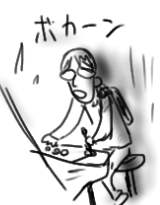
「バーチャロンフォース」と「式神の城」まわりをウロチョロしてる女性がいて「異様に濃ゆい(ゲームの趣味が)女性だなぁ」と思いながら斑鳩をやっていたのですが、プレイ終わって帰りにそちらを伺い見るとなんと男性だった！というのが今日一番驚いたことです。たいしたことない1日だけどタチが悪いなぁ(僕の頭の)。
くるりはシングルは名曲揃いなのにアルバムになるとちっとも冴えないなぁというのが今までの感想だったのですが、今回のアルバムはようやく着地点がしっかりしたというか、相変わらず音楽性はかなりの雑食なんですけどアルバムとしてのトータリティが感じられ、聞いてて安心できます。演奏力も向上したのでは(偉そう)。不覚にも2曲目の「静かの海」でこみあげるものがあったよ。World's end girlfriend系の泣き音響。しかし、先行シングルの「World's end super nova」て卑怯なタイトルだなぁ。
もちろん買ったCDは2枚とも帰りの電車で開封しましたよ。子供なので家まで我慢できません。子供だって「学研の学習/かがく」は家で箱を開けると言うのに！
会社帰りにふとレンタルビデオ屋の前を通りかかったところ、「本日レンタル半額」というノボリが立っていたので、つい思い立って短時間(30分)で見られるものということで、かなり今さらですが「映画デジモンアドベンチャー02 ディアボロモンの逆襲」なんかを借りてしまいました。しかし、キッズコーナーをいい年をした大人がウロチョロするのは大層気まずい。ちなみにもっと年上になれば自分の子供用ということで逆に怪しまれなくなるはずなので、今が怪しさMAXくらいの年令と言えます。いや、どうか？
今さら言うまでもないのですが、前作「映画デジモンアドベンチャー ぼくらのウォーゲーム」は40分の掌編ながら、子供達にしか気付かない『今そこにある危機』を書ききった傑作で、ピンチにつぐピンチ、ぎりぎりのところでの大逆転、と手に汗握る絶妙な脚本とそれを支えるハイクォリティなデジタル作画でDVDまで大購入しているほどのお気に入りなのですが、その時の危機名(敵名ではなくてこう言った方がピンと来るところがポイント)が「ディアボロモン」。というわけで今回は完全なる続編です。
で、今回はあまり盛り上がりがないだらだらとした展開でかなり残念。絵などは無茶苦茶カッコイイんですけどね。前回はネットワーク上での戦いだったのですが、今回はその敵(今回は"敵"なのです)が現実へ出現して来て大暴れ、というわけで怪獣映画として見るのが正しいのですが、最後で必殺逆転パワーアップするのはいいとして、その前に主人公達にろくにピンチが訪れていないので何となくやっつけちゃった感が強いです。事件の"後片付け"方法も、伏線が効いてくるわけでもなくて割とご都合主義的で唐突なのもいただけません。しかし、お台場で巨大生物同士がビームや剣で大激突！という絵面はかなりクるものがあるので、町を歩いていても、ついつい巨大生物をビル越しに幻視してしまうような僕と同類の方達は是非見てみるといいと思いました。
デジモンからデジモン02になった時に3年の時が流れていて、主人公達に世代交代が起こっており(前作の主人公達が中学生になってサポートキャラになり、前作の主人公達の弟妹その他小学生キャラが02の主人公に、という構図)、前作の主人公(男)と仲間(女)がいい仲になっているわけですよ。今回の映画で白眉だと思ったのは、お台場で、前作の主人公(男)と仲間(女)ともう一人仲間(男)がいて、敵が大暴れしている時に、仲間(女)はすぐ近くに仲間(男)がいるにもかかわらず、やっぱり主人公(男)の方にしがみつくんですよね。普段は全くベタベタしてない癖に(ここポイント)。「あー、なんでこいつ(女)は当たり前のようにこいつ(男)の横にいるんだろう。なんでそこが定位置なんだろう。」みたいな。僕じゃもうどうしようもならないんだ、そこに決まっているんだから、みたいな。見せつけられる感じが。なんかすごいキました。これ、伝わりますかね？伝わらないかなぁ。ていうか、いつまで僕は傍観者の側にいるんでしょうか。はみだし側にいるんでしょうか。
こんなことばかり言ってるから「おまえのロマンティシズムは理解しがたい」とか「ほんと細かいのな」とか「わからねぇ」とか言われるんですよね。そしてデジモン02の次の「デジモンテイマーズ」も終了だというのになんで今頃こんな映画見て語っているのか。もう、何がなにやら(ほんとな)。
マルタイラーメンを御存じでしょうか。昭和34年にマルタイ棒ラーメンを発売して以来、ほそぼそとロングセラーを達成している福岡の即席ラーメンの雄です。時代から言って、ちょうど僕らの父親くらいの年令の方達が大学時代に貧乏生活の食料としてお世話になった例も多いと聞きます。実際、僕も父親に「学生時代、鍋がないから電気ポットでマルタイラーメンを茹でて食った」という武勇伝を聞かされました。
マルタイファーストコンタクトは僕が中学生くらいの時、父親が店頭で発見し、懐かしさでついつい購入。前述したような父親の武勇伝や思い出話付きで食わされたのが最初です。今思い返せば、父親が青春時代に慣れ親しんだ味を息子に伝えようと張り切っていたのではないかと思うのです。そういうラーメンちょっといい話。
…で済めばいいのですが、教育が行き過ぎて、結局、僕も学生時代2束100円という破格な値段につられて毎日マルタイラーメンを食っていた時期があります。血は争えません。友人と、いかに手を加えずにリッチでデリシャスなマルタイラーメンを食えるかを争ったなぁ。行き着くのは「桃屋のメンマを加える」という安易な終着駅でしたが。もっと工夫しろ。
そんなわけで僕の中でマルタイとは、時代が進んでも頑に低価格棒ラーメンを作り続ける硬派即席めんメーカーとして定着していたのでした。
ところが！！
コンビニ店頭で「マルタイラーメン講座」なるカップラーメンを発見。いわく、「女子高校生が彼氏に食べさせたいラーメン」「放課後」「女子高生が試食して作り上げた」「食べてみて」など、パッケージは女子高生一色！僕の中のマルタイのイメージがぼろぼろと崩れ去りました。
何が言いたいかというと、僕が「ラーメン講座」を買ったとしても、決して女子高生に惹かれたからではなく、父親とのホロ苦メモリーであるところのマルタイの行く末を見てみたいという好奇心ゆえのことだとご理解下さい、ということなのです。
胡椒や唐辛子をブレンドしたスペシャルスパイスの味でスープの味が分からなくなるピリピリ系で、確かに若い人たちは好きそうな味だなぁと思いました。
即席めん愛好家ミズグチはマルタイラーメンを応援しています。
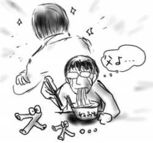
(ref: ぐるなびNews)
ええと、親は僕がこのような食生活を送っていることにむしろ嘆くと思いますが、今日はたまたま食料も時間もなかっただけです。あくまで、たまたま。たまたまですよ。ハハハ。
そんなわけで今日は帰宅してからメガドライブを引っ張りだして延々と『スライムワールド』をやっていたわけですけれども、これが最近はとんと見なくなったナイスな横スクロールアクションゲームで、大変よい拾い物をしたなぁとほくほくです。
スライムだらけの惑星を水鉄砲を武器に突き進め。スライムは水しぶきに弱いんだ。でもスライムは死ぬときにスライム体液をブチュッと飛び散らせるので身体に付着しないように気をつけろ。身体に付着したスライムは水たまりで洗い落とせば大丈夫だぞ。天井からもスライム滴が落ちてくるし、スライム溜まりもあるから気をつけて冒険を進めるんだ。スライムまみれになっちまったらアウトだからな。アイテムは有効活用しろよ！
とまぁおおまかなルールはそれだけなのですが、水鉄砲が使えず、パズルのようにアイテムを駆使して出口を目指すLOGIC、時間制限が来ればスライムワールドが崩壊するので、マッシュルームで崩壊までの時間を延長させながら出口を目指すSUSPENSE、敵の攻撃が激しいACTIONなど、様々なゲームが用意されているのもうれしいところ。あんまり代わり映えはしないんですけどね。
アイテムを使えば確実に楽に進めるし、倒した敵スライムは、自機が死んでしまっても復活しないので、相打ちだとしても敵を倒していると先に進めるようになるあたりも洋ゲーにありがちな意地悪さがなく、大変よい感じです。取ったアイテムも復活しないのはなかなかシビアですが、このアイテムを残して玉砕、そしたら次の自機でこのアイテムを使って突破口を開ける、みたいな戦略性も生まれます。多分。
とりあえずACTIONをクリアしてみました。スーパースライムジェム(高得点アイテム)を狙って大型スライムと一騎討ち！なんていうイカすシチュエーションもあったりしてなかなか楽しいです。
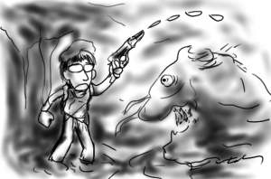
しかし、こんなほとんどの人がやってもいない、存在も知らないはずのゲームを一生懸命アピールして一体何になると言うのか。
名古屋の秋葉原こと大須！今日の日記では、その大須の魅力を十分にお伝えしたいと思います。
大須は、お年を召した方々を拒絶しません。マジカルピンクパニック！？な秋葉原と比べ町並みはいたってシックです。秋葉原と浅草あたりを足して２で割ったような感じで、年輩の方々を引き付ける宗教方面もバッチリ完備です。大須観音や大須不動明王などでは毎日おばあちゃんやおじいちゃんが手をあわせている様子が見られます。健康や長寿を祈って手を合わせている、そのすぐ近くでは「陵辱」や「調教」と言った単語がパッケージに飛び交うPCエロゲーなどが陳列・販売されているんですけど、まずこの混沌さが僕は大好きです。
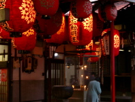
電気街としての大須の魅力はなんと言っても中古市場でしょう。名古屋人は物持ちがいいのかどうか知りませんが、秋葉原ではたまに路上で見かければいい感じで、とっくに店頭からは姿を消したようなものが普通に店頭に陳列されて売られています。今回もワンダーメガ(メガドライブとメガCDの一体型ゲームマシン)やツインファミコンが足下見たような価格で売られていました。
さらに大須の中古市場は、やたらと網羅的であるということが言えます。中古ゲームソフト屋に入ると、SG-1000(太古のセガハード)から始まってPS2までが揃えられていたり、中古ゲームハード屋に入ると、PS2やゲームキューブに混じってMSXあたりからX68000、FM-TOWNS(もちろんTOWNS-IIやマーティも含みますよ？)なども陳列されていたりします。さすがに店頭デモがMSX版のドラクエ２だった時はやりすぎかと思いました(キャラ背景が黒抜きなので分かります)。
Macintoshの中古も規模の割に取り揃えられているところもフルーツユーザとして嬉しいところで、ベージュMacなどがずらりと並ぶ様はなかなか壮観です。PowerMacG3 DT233が本体のみで29,800円で売っているのを発見した時はさすがに財布を確認しましたが、あいにく手持ちがなかったので買わずにすみました。よかったよかった。
結局僕が買ったのはメガドライブ版の『スライムワールド』というどうしようもない洋ゲー(原題は: Todd's Adventures in Slime World)で、大変タチが悪いなぁ。
「It's Melt, or be Melted!」の文字も勇ましい、冒険家トッドがスライムだらけのドロドロ惑星をスライムまみれになりながら探険するという内容で、ATARI LynxやPC-Engine版などもあります。意外と海外で流行ったんでしょうか。主人公トッドはストIIのガイルをごっつくしたようなグラサン野郎なんですが、PC-Engine版は細身のアニメタッチになってギャルのアシスタントもいるところが笑いポイントです。もちろんメガドライブ版は100%アメリカンテイストのまま移植されています。
あなたは勇敢な銀河探検家です。気味の悪い危険な生物がいっぱいの惑星ほど好きなものはないのです。アンドロメダ星雲への探険旅行で、不思議な漂流スターシップを発見。そこで見つけた航海日誌の一部に書かれた、気味の悪い惑星スライムワールド、そして光る宝石…。
もう、あなたはスライムワールドへ行かずにはいられません。ドロドロ、ネバネバの奇妙な生命体が待っていようとも…。(パッケージ裏から抜粋)
いろんな意味で説明になっていませんが、何にせよこんなカートリッジを嬉しそうに買い求める僕はトッドを笑えません。
夕食に中華をたらふく食べて帰宅した気がします。
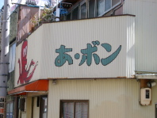
おまけ：たこ焼き あ・ボン (注:大須ではありません)
(前回までのあらすじ)母校に出張だよ。ところがその日は実は卒業式だったんだ！
早朝に関東を出発し、名古屋へ向けて新幹線を飛ばします(運転してません)。
車窓から後方へ飛び去って行く景色を眺めていると、大学を卒業してから経過してしまった月日が巻き戻って行くような錯覚を覚える。「もう、3年か…」僕は思わずつぶやいた…はずもなく、ルディ・ラッカーの「フリーウェア」を読んでたらあっさりと名古屋に到着しました。
五分咲きから七分咲き、これから春を謳歌するであろう桜の木並を通り過ぎ、やたらと工業大学生らしくないオシャレな卒業生に時間(とき)の流れを感じながら校外にある卒業式会場の横を行き過ぎると、そこはもう母校。校門をくぐる身体に思わず力が入る、はずもありません。超私服で母校入りを果たしました。
まずは僕が3年間ほど滞在した研究室へ。適当な挨拶や適当な説明を済ませます。あくまで本番は午後から就職担当の先生に挨拶して、ゼミ室に集めてもらった学生さん達を相手に弊社について語ることであって、午前中は顔見せのようなものです。
卒業式から帰って来た博士(工学)免許皆伝な同級生をつっついて遊んでいたら彼の席の上にヤドカリのゴンザレスを発見！
ヤドカリのゴンザレスとは、「水辺の生物」という玩具付き菓子のおまけであり、僕が修論に日夜勤しんでいた時に、過酷な労働に悲鳴をあげるPowerMac7300の上で鎮座し、無言で僕の心を癒してくれた…ええと一言で言うとプラモデルです。
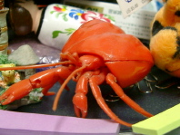
本番では10名以上の学生達が参加してくれて、僕は指令を無事に果たすことが出来ました。やぁいい仕事をしたなぁ(アピール)。結局のところ、昨日から今日にかけて執拗に卒業式であることを強調して不安感を煽ってましたが、実はあんまり影響なかったようです。ゼミ室は多少ビール臭かった気がしますが、きっと気のせいです。
夜は肉を食ったような。そして、友人宅で一泊したような。
毎日更新が途絶えたからと言って僕の更新欲まで逝ってしまったわけではありません！(挨拶)
実は22日は名古屋出張でありましたので、翌日に備えてこの日は早々にぐっすりと眠ってしまったのです。名古屋出張と言ってもOB訪問という形で母校でありますところのニテク(nitech<-Nagoya Institute of Technology)をぶらりと訪れて後輩諸氏にあることあること吹き込めば万事OKの楽チン仕事であります。
ところが、アポを取った日は実は卒業式だと後から知らされて…。毎号クライマックス！百万乙女のラブストーリー、結末は！？(つづく)